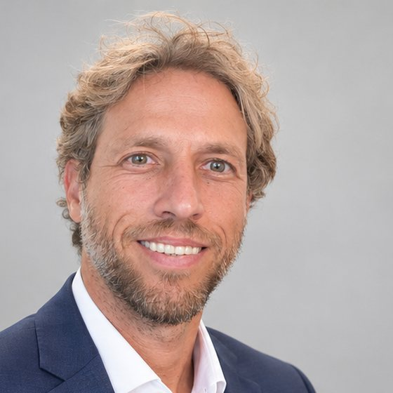

Hi, I'm Amit.
Seven years in product management across banking software and payments. I took a payment platform from discovery to its first paying customers, then owned product for the core platform that Finastra's products run on. I like problems where getting it wrong has real consequences, and on the side I build my own tools with AI.

I don't chase features. I chase the one workflow that's quietly costing everyone time or trust, then I make it something people can rely on.
From raw-material planning in a plant to a wire transfer in a bank.A payment mechanism handling millions of payments needed an architecture change, and a high-volume path can't be allowed to break while it evolves.
Led the product side of the change, working through design trade-offs with system architects and dev leads. Ran discovery with customer-facing teams to turn recurring pain points into clear specifications.
The roadmap and priorities for core platform capabilities whose users were engineers and developers, balancing stakeholder needs, business priorities and long-term scalability.
SMB customers needed to move money quickly, but every payment still had to be controlled and hard to get wrong, by design and not by policy.
Led discovery and wrote the specifications for domestic transfers and a foreign-currency flow, with maker-checker approval built into the core workflow, so no payment moves without a second approval. Built its APIs together with the development team, from scratch, including retrieving payments pending approval and rejecting a payment.
Three years, from discovery and specification to launch and the first two paying customers, together with Engineering, Design, Sales and Customer Success.
Relationship managers and bankers were losing time to friction in the tools they used every day, inside a bank where changes have to be made with care.
Gathered requirements directly from the bankers who used the CRM, prioritized what to build first, and drove rollout and adoption.
The internal CRM from requirements to rollout, used by relationship managers and bankers.
Raw-material planning touched nearly every function in the plant, and slow-moving inventory was quietly costing the business money.
Planned raw-material requirements, partnered with IT on the MRP system's requirements, and coordinated daily with QC, QA, marketing, procurement, import/export, warehouse and production.
Slow-moving inventory down 8%, on work that supported $100M of purchasing decisions.
Two products I built on my own with an AI coding agent. In both, the real design question was where the software should act on its own and where a person has to stay in control.
An agent that runs my job search, with me approving every step.
It scans company job boards, scores fit with an LLM against weighted criteria, and drafts a tailored CV and cover letter. The model writes only from a fixed facts file, so it can't invent experience, and nothing is sent anywhere without my approval.
A mobile-first budgeting app, in Hebrew.
It imports bank and card exports, classifies transactions with rules plus my own corrections, and reconciles card statements against account debits to the cent. Anything the rules don't recognize waits for review instead of being guessed. The demo runs on synthetic data, and works best on a phone.
Roadmap and prioritization, product discovery, requirements and specifications with edge cases, user stories, agile delivery
Payments, banking software, core platforms, regulated products, approval workflows (maker-checker), foreign-currency payment flows
Engineering, Design, Sales, Customer Success, system architects, stakeholder management
Claude, ChatGPT, AI coding agents (Claude Code), LLM-based workflow automation, REST APIs, Figma (basic), Looker (basic), Microsoft Dynamics 365